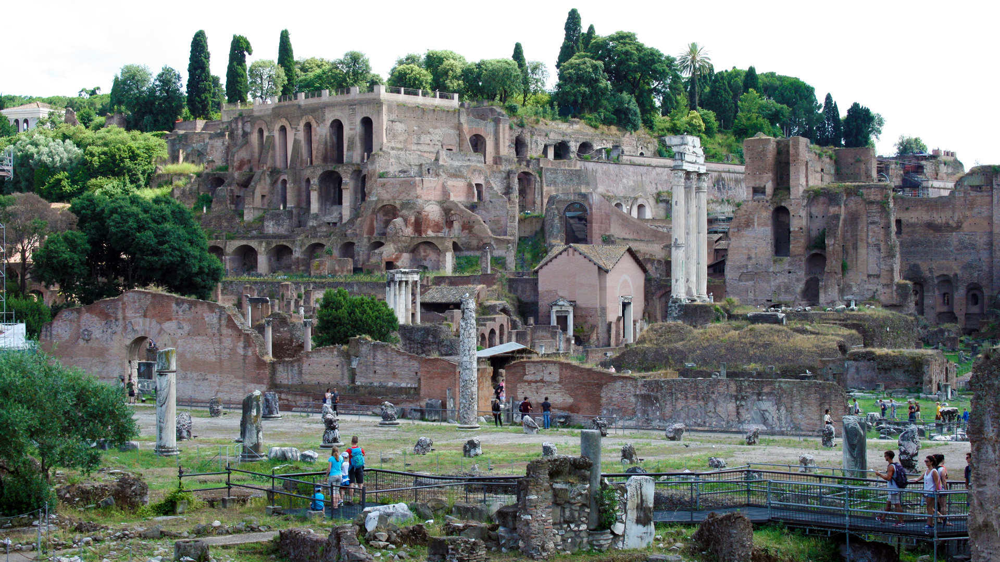
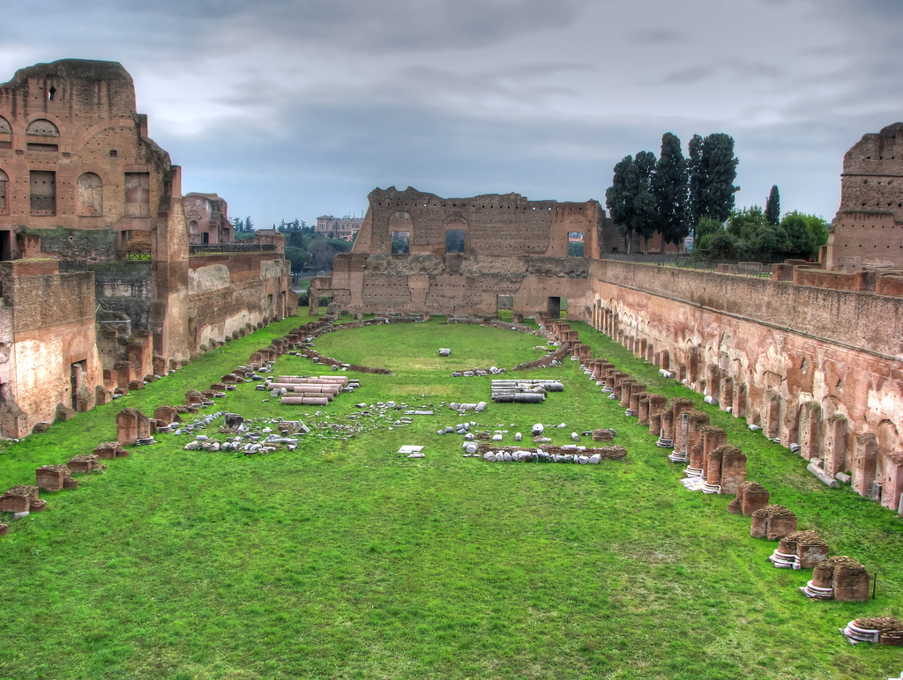

Palantine Hill
The Palatine Hill (Palatino) is considered to be the place where Rome was born. One of Rome’s seven hills, the Palatine Hill is closely linked with the city’s history and houses some of its most ancient and important sites.

Legend says that the twins Romulus and Remus were taken to Palatine Hill by a she-wolf who raised them. Here they founded a village which would become Rome.
In a dispute over who was the rightful leader of the new settlement, Romulus eventually killed his brother at the Palatine Hill. Romulus thus became the namesake of Rome. Indeed, the Palatine Hill is where the earliest huts of Rome were found, supposedly built under the remit of Romulus.

As it developed, the Palatine Hill became one of the most affluent areas in Ancient Rome and was already a coveted address by the first century BC during the Republic. This continued under the Roman Empire, when the Palatine Hill was home to Rome’s most prominent figures. It was also where the first Emperor of the Roman Empire, Augustus was born in 63 BC.
Today, the Palatine Hill offers some of Rome's best ancient sites and is a must-see, especially for history enthusiasts. Amongst the buildings excavated at the Palatine Hill are the House of Augustus, the House of Livia (Augustus’s wife), the home of several of Rome’s emperors - the Domus Augustana - and the Palace of Septimius Severus.